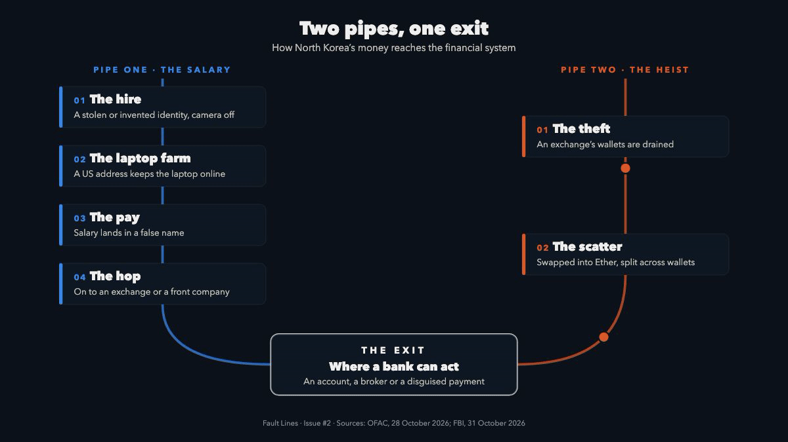

Is North Korea on your payroll? And in your crypto flows?
Pyongyang raises hard currency two ways: IT workers hired by Western firms under false names and hackers who empty crypto exchanges. Both streams need the financial system to get out. Here is how the money moves and where a bank can stop it.
Last issue we followed a cargo of oil from Novorossiysk to your payments queue. This time the cargo weighs nothing.
North Korea runs one of the world's most effective money operations without a correspondent bank of its own. It borrows everyone else's: an employer's payroll, an exchange's hot wallet and a bank's ordinary accounts.
This issue follows both streams to the same exit and finishes with red flags and controls you can use.
01The story
Two announcements three days apart show both halves of the same operation.
On 28 October the US Treasury's Office of Foreign Assets Control (OFAC) designated ten people and one company behind North Korea's IT-worker schemes: facilitators, team leaders and six of the workers themselves. Eight are North Korean and two are Russian. All ten are listed in Russia. The six workers are tied to that company, set up only in January 2024. Several listings carry crypto wallet addresses, and the two Russians share the same one.
On 31 October the FBI said North Korea was behind the theft of more than US$6bn in virtual assets from the exchange Binance, on or about 29 October. The FBI calls the actor TraderTraitor. It is the same name the FBI gave the group behind the US$1.5bn Bybit theft in February 2025.
The IT-worker scheme is the quieter half. North Koreans get hired as remote developers under stolen or invented identities. Helpers in the US run "laptop farms": homes where company laptops sit switched on so the workers can log in from abroad. In June 2025 the US Justice Department searched 29 suspected laptop farms in 16 states and seized 29 financial accounts used to launder the pay. In October 2026 a second sweep reached more than 40 suspected laptop farms in Texas alone.
One half is a salary. The other is a heist. Both have to become money the regime can spend, and that is where the financial system comes in.
02The money trail
Two pipes start in different places and end at the same exit. Each step touches someone's controls.

Pipe one: the salary.
- The hire. A remote developer is hired under a stolen or invented identity. Interviews happen with the camera off or with a stand-in.
- The laptop. The company ships a laptop to an address in the US, where a facilitator keeps it running for the worker abroad.
- The pay. Salary lands in an account held in the false name or by the facilitator, who takes a cut.
- The hop. The rest moves on fast, to a crypto exchange or to accounts held by front companies abroad, then to wallets like the ones on OFAC's list.
Pipe two: the heist.
- The theft. Hackers get into an exchange and drain its wallets. The FBI says the Binance haul is being converted mainly into Ether.
- The scatter. The FBI expects the coins to be swapped and split through DeFi protocols and instant swap services that ask few questions. In the Bybit case the FBI saw the haul spread across thousands of addresses on several blockchains.
- The exit. At some point the coins have to become ordinary money: an exchange account, an over-the-counter broker or a payment dressed up as something else.
Banks rarely see a hacker or a laptop farm. They see a salary that leaves the day it arrives, a deposit from an exchange or a payment to a company with no obvious business. That is the laundering channel: ordinary accounts doing the last mile for a sanctioned state.
03Red flags
- A hire nobody has met. Camera always off, references you can't reach and equipment shipped to an address that isn't the worker's home.
- Many workers, one address. Several "employees" or customers share a delivery address, phone number, device or bank account. That is how a laptop farm looks from the outside.
- Pay that doesn't stay. A salary moves on the day it lands, to a crypto exchange or to a third party with no clear link to the account holder.
- Identity that doesn't fit. Passports with near-consecutive numbers issued on the same day, or one name spelled several ways. Both appear in OFAC's 28 October listings.
- Wallets on the list. Exposure to an address on an OFAC listing or on the FBI's TraderTraitor list, directly or a hop or two away.
- Ether in a hurry. Large conversions into Ether or bursts of instant swaps soon after a reported exchange hack.
- A counterparty that doesn't ask. Payments to or from an exchange or swap service that doesn't screen its customers or registers nowhere.
No single flag proves North Korea. The pattern does.
04What compliance looks like
A bank meets this threat twice: as an employer that could hire one of these workers and as the account provider for everyone in both pipes.
- Screen wallets as well as names. OFAC's North Korea listings carry crypto addresses. Screen crypto exposure, directly and a few hops out, with blockchain analytics. Treat the FBI's TraderTraitor addresses as high risk: the FBI asks firms to block them.
- Know your crypto counterparties. Do real due diligence on exchanges and payment firms you bank or pay: their licensing, their sanctions screening and whether they apply the travel rule.
- Watch the salary pattern. Build monitoring for wages that leave on arrival, payroll credits forwarded to exchanges and several customers sharing one address or device.
- Check your own hiring. Verify remote hires in person or by live video, check that the laptop goes to the worker's real address and watch for logins from unexpected countries. Paying a North Korean worker can itself breach sanctions: OFSI says firms that employ or pay these workers could be directly or indirectly breaching financial sanctions.
- Freeze, report and escalate. Funds of a designated person must be frozen and reported to OFAC or the UK's Office of Financial Sanctions Implementation (OFSI). Anything short of a match but still suspicious goes in a suspicious activity report.
The AI angle. This is a link-analysis problem. The evidence sits in HR systems, payment data and the blockchain, and humans rarely join them up in time.
- Entity resolution spots the ten "employees" who share one address, device or account.
- On-chain graph analysis traces a deposit back through swaps and bridges to a listed wallet.
- Anomaly detection flags a payroll account that behaves like a pass-through.
The catch is the same as last time. A model that says "suspicious" is not enough for a sanctions decision. The analyst needs the trail, and good tools should show it.
05Watchlist
- The Binance funds. How much exchanges and analytics firms freeze before the coins reach an exit.
- Laptop farms. Whether the US crackdown spreads to the UK and Europe, where remote hiring is just as common.
- The facilitator network. Whether the UK lists the same ten people. Treasury says Australia and the EU made their own North Korea designations the same month.
Fault Lines uses public sources only and is not legal advice. If this was useful, forward it to a colleague in compliance, payments or sanctions screening. Dan Hartwig
Sources
- North Korea designations · OFAC, 28 Oct 2026
- Treasury sanctions facilitators of DPRK IT worker fraud · US Treasury, 28 Oct 2026
- North Korea responsible for US$6bn+ Binance attack · FBI, 31 Oct 2026
- North Korea responsible for the US$1.5bn Bybit theft (I-022625-PSA) · FBI IC3, 26 Feb 2025
- Coordinated nationwide actions against North Korean remote IT workers · US Justice Department, 30 Jun 2025
- Coordinated actions against schemes affecting more than 70 US companies · US Justice Department, 13 Oct 2026
- North Korean IT workers advisory: signs to watch for · OFSI, 12 Sep 2024
- Guidance on North Korean IT workers · US State Department, Treasury and FBI, 16 May 2022
- CMI010 Cryptocurrency Evasion · Nexus knowledge centre
Opening photographs: “Pyongyang City, Ryugyong Hotel in background” by Uri Tours and “Nordkorea 2015, Pjöngjang, Blick vom Juche Turm” by Uwe Brodrecht, both CC BY-SA 2.0, cropped and graded. Other photographs by Mike Bravo, Revendo, Taylor Vick, Mohammad Rahmani, Maxim Hopman, Aedrian Salazar and Austin Hervias, via Unsplash. Music: original.